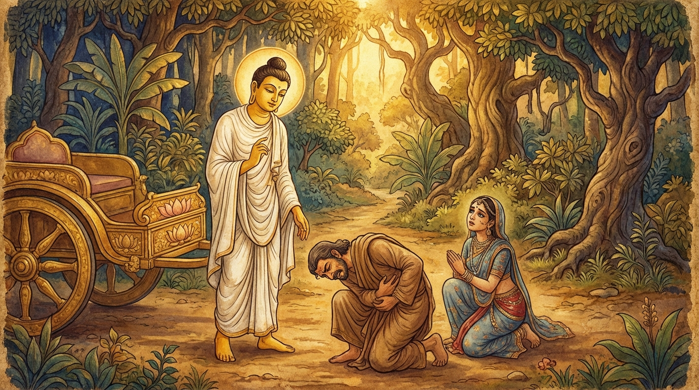

2. වීණාථූණ ජාතකය (232)
“එකචින්තිතොව අයමත්ථො” (මේ කාරණය හුදකලාව සිතන ලද්දක්) යන මේ ධර්ම දේශනාව බුදුරජාණන් වහන්සේ දෙව්රම් වෙහෙරෙහි වැඩවාසය කරන සමයෙහි එක්තරා කුමාරිකාවක් අරබයා වදාළ සේක. ඇය සැවැත්නුවර එක් සිටු දියණියකි. ඇය තමන්ගේ නිවසේදී ගොන් රජෙකුට (වෘෂභ රාජයෙකුට) සත්කාර කරනු දැක කිරිමවගෙන්, “මෑණියනි, මේ ආකාරයට සත්කාර ලබන මොහු කවරෙක්දැයි” විමසුවාය. “දේවියනි, මේ වෘෂභ රාජයෙකි” යයි ඇය කීවාය. නැවත එක් දිනක් ඇය ප්රාසාදයෙහි සිට වීදිය දෙස බලන විට එක් කුදු මිනිසෙකු දැක, “ගොනුන් අතර ශ්රේෂ්ඨයාගේ පිටෙහි මොල්ලියක් ඇත. මිනිසුන් අතර ශ්රේෂ්ඨයාගේද මොල්ලියක් තිබිය යුතුය. එනිසා මොහු මිනිසුන් අතර පුරුෂ වෘෂභයෙක් (උතුම් පුරුෂයෙක්) වන්නේය. මා ඔහුගේ බිරිඳ (පාද පරිචාරිකාව) වීම සුදුසුය”යි සිතුවාය. ඇය දාසියක යවා, “සිටුදුව නුඹ සමග යනු කැමතිය. අසවල් ස්ථානයට ගොස් සිටින්න” යැයි ඔහුට දන්වා, වටිනා බඩු රැගෙන අන් අය හඳුනා නොගන්නා වෙස් ගෙන ප්රාසාදයෙන් බැස ඔහු සමග පලා ගියාය. පසුකලෙක ඒ ක්රියාව නගරයෙහිද භික්ෂූන් අතරද ප්රකට විය. දම්සභාවේ රැස්වූ භික්ෂූන් වහන්සේලා, “ඇවැත්නි! අසවල් සිටුදුව කුදු මිනිසෙකු සමග පලා ගියාය” යනුවෙන් කථාවක් මතු කළහ. බුදුරජාණන් වහන්සේ එහි වැඩමවා, “මහණෙනි! දැන් කවර කථාවකින් යුක්තව සිටියෙහිදැයි” විචාරා, “මේ නම් කථාවෙන්” යයි කී කල්හි, “මහණෙනි! මැය කුදෙකුට කැමති වූයේ දැන් පමණක් නොවේ, පෙරත් එසේ කැමති වූයේය” යයි වදාරා අතීත කථාව ගෙනහැර දැක්වූ සේක.
යටගිය දවස බරණැස් නුවර බ්රහ්මදත්ත රජු රජ කරන සමයේ, බෝධිසත්වයන් වහන්සේ එක්තරා නියම්ගමක සිටු කුලයෙහි උපත ලැබූහ. වැඩිවියට පත් එතුමා ගිහිගෙයි වසමින් දූපුතුන් ලබමින් සිටින අතර, තම පුතාට බරණැස් සිටුතුමාගේ දියණිය විවාහ කර දීම පිණිස තෝරාගෙන දිනයක් නියම කරගත්තේය. එහෙත් සිටුදුව තමන්ගේ නිවසේ ගොනෙකුට කරන සත්කාර සම්මාන දැක, “මේ කවරෙක්දැයි” කිරිමවකගෙන් විමසා, “ගොනෙක් (වෘෂභයෙක්)” යයි අසා, වීදියෙහි යන්නා වූ එක් කුදු මිනිසෙකු දැක, “මොහු ශ්රේෂ්ඨ පුරුෂයෙකු වන්නේය”යි සිතා වටිනා බඩු රැගෙන ඔහු සමග පලා ගියාය. බෝධිසත්වයන් වහන්සේද සිටුදුව තම නිවසට කැඳවාගෙන එන්නෙමියි සිතා මහ පිරිවරින් බරණැස් නුවරට යමින් සිටියදී ඒ මාර්ගයටම පිවිසි සේක. ඒ දෙදෙනා මුළු රැයක්ම මාර්ගයෙහි ගමන් කළහ. ඉක්බිති අරුණෝදය වන විට මුළු රැයක්ම සීතලෙන් පීඩා විඳි කුදාගේ සිරුරෙහි වාතය කිපුනේය. මහත් වේදනාවක් ඇති විය. ඔහු මාර්ගයෙන් ඉවත්ව වේදනාවෙන් යුක්තව වීණා දණ්ඩක් මෙන් හැකිලී වැතිරුණේය. සිටුදුවද ඔහුගේ දෙපා මුල සිටියාය. බෝධිසත්වයන් වහන්සේ කුදාගේ පාමුල සිටින සිටුදුව දැක හඳුනාගෙන, ඇය වෙත ගොස් සිටුදුව සමග කථා කරමින් පළමු ගාථාව වදාළහ:

“මේ කුදා සමග පලාගිය මැනවැයි යන මේ කාරණය හුදකලාව සිතන ලද්දකි. (මේ කුදා නුවණ අඩු බැවින්) බාලයෙකි; (ස්වශක්තියෙන් යන්නට අපොහොසත් බැවින්) නායකත්වයක් දිය නොහැක්කෙකි (අපරිණායකය). පින්වතිය, කොර වූ අත් පා ඇති, (ශරීරයෙන්) වාමන වූ කුදා හා එක්ව යාමට ඔබ සුදුසු නොවෙයි.”
එහි අර්ථය මෙසේය: එකචින්තිතොයමත්ථො: නැගණිය! ඔබ යමක් සිතා මේ කුදා සමග පලාගියාද, ඒ අදහස ඔබ විසින් තනිවම සිතන ලද්දක් වන්නේය. බාලො අපරිණායකො: මේ කුදා බාලයෙකි. නුවණ නැති බැවින් මහල්ලෙක් වුවද බාලයෙකි. ඔසවාගෙන යන්නා වූ අනෙකෙකු නැති කල්හි තනිව යන්නට අසමත් බැවින් ‘අපරිණායක’ වේ. න හි ඛුජ්ජෙන වාමෙන, භොති සඞ්ගන්තුමරහසී: පින්වතිය, මහා කුලයෙහි උපන්, මනා රූ ඇති, දැකුම්කලු වූ ඔබ, ශරීර ස්වභාවයෙන් මිටි වූ (වාමන) මේ කුදා සමග යන්නට සුදුසු නොවෙයි.
එවිට ඔහුගේ ඒ වචනය අසා සිටුදුව දෙවන ගාථාව මෙසේ කීවාය:
“මම පුරුෂ වෘෂභයෙකැයි සිතමින් මේ කුදාට කැමති වූයෙමි. (එහෙත්) ඒ මොහු, තත් සිඳුණු වීණාවක් මෙන්ද, වීණා දණ්ඩක් මෙන්ද හැකිලී නිදයි.”
එහි අර්ථය මෙසේය: “ආර්යයන් වහන්ස! මම එක් ගොනෙකු දැක, ‘ගවයන් අතර වැඩිහිටි ගවයාගේ පිටෙහි මොල්ලියක් ඇත. මොහුටත් එවැනි මොල්ලියක් ඇත. එනිසා මොහුද උතුම් පුරුෂයෙකු විය යුතුය’යි සිතා, මේ කුදා ‘පුරුෂ වෘෂභයෙකැයි’ සලකා මොහුට කැමති වූයෙමි. ඒ මොහු දැන් තත් සිඳුණු ද්රෝණියක් සහිත වීණා දණ්ඩක් මෙන් මෙසේ වකුටු වී නිදයි.”
බෝධිසත්වයන් වහන්සේ ඇය නොහඳුනන වෙස් ගෙන නික්ම ගොස් සිටි බව දැන, ඇය නහවා, අලංකාර කරවා, රථයකට නංවාගෙන නැවත ගෙදරටම රැගෙන ගියහ.
බුදුරජාණන් වහන්සේ මේ ධර්ම දේශනාව ගෙනහැර දක්වා ජාතක කථාව නිමවා වදාළ සේක. “එකල සිටුදියණිය වූයේ මැයයි. බරණැස් සිටුතුමා වූයේ මම ම ය”යි වදාළ සේක.
දෙවන වූ වීණාථූණ ජාතක වර්ණනාව යි.